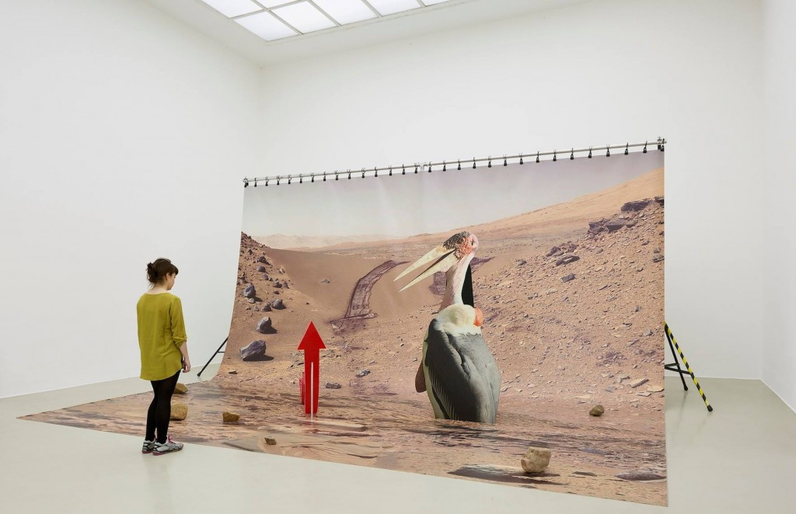
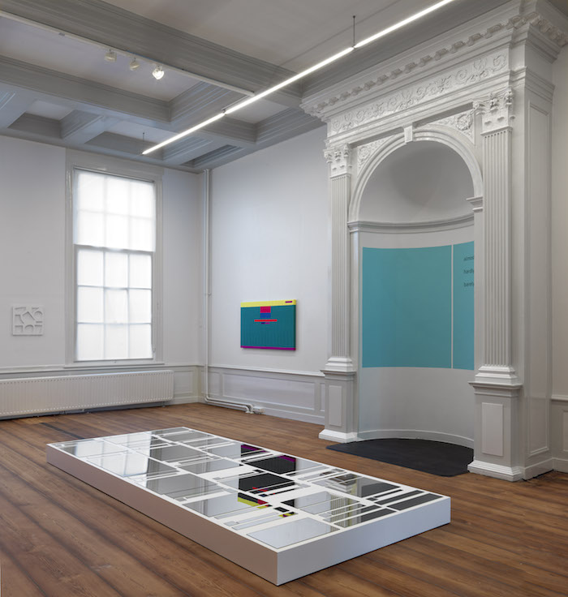

Mouvement ou courant de pensée ?
Les pratiques des artistes dont les œuvres se déplacent fluidement entre les espaces, apparaissant parfois sur un écran, d’autres fois dans une galerie.
Mêlant culture d’Internet et sujets sociétaux, le post-Internet est un mouvement artistique introduit par la théoricienne Marisa Olson. Émergeant en 2006 comme moteur de réflexion, ce courant invite les spectateurs à questionner l’influence d’Internet sur leur mode de vie. « L’art post-Internet fonctionne en réseaux et, en quittant la virtualité, se mue pour correspondre aux conventions du monde de l’art », explique Gene McHugh (critique d’art et théoricien américain). Ainsi, entre virtualité et réalité, où le spectateur doit-il se placer ?
L’esthétique du post-Internet tire directement des codes traditionnels de l’art, réadaptés pour naviguer entre le monde réel et virtuel, jouant d’illusions pour relier ces deux cultures.
Réécriture totale ou simple réadaptation de notre monde contemporain : est-ce l’art contemporain qui influence le post-Internet, ou l’inverse ? Ce mouvement accompagne les artistes nés lors de l’émergence d’Internet, où le réseau est devenu un médium par défaut. Internet n’est donc plus un espace virtuel autonome mais bien une extension tangible, jouant avec les frontières entre matérialité et immatérialité.  Transgressant les pratiques traditionnelles, ce mouvement allie numérique, installation, sculpture, et bien plus encore pour questionner notre connectivité aux réseaux. Ces œuvres se caractérisent souvent par une esthétique rétro des années 80, avec le “néo-surf” et le “glitch”, s’articulant autour de couleurs pop et de formes issues de défauts visuels.
En utilisant des supports physiques et des ressources numériques, le mouvement post-Internet remet en question la nature des objets artistiques et de ce qui fait « art ». Les artistes s’inspirent de l’abondance d’informations pour interroger une société où il est difficile de distinguer le pertinent de l’insignifiant, l’utile du superflu. L’essence même du post-Internet réside dans sa capacité à réapproprier des données en ligne, telles que des images et des photos, pour en créer de nouvelles compositions artistiques. Cette critique sociétale est mise en avant par l’artiste irlandais Garrett Lynch, pionnier de l’art des nouveaux médias. Lynch utilise l’influence des médias et les navigateurs web comme formes d’art pur pour concevoir des nœuds dans les réseaux. Avec Flashmob on Me  l’artiste joue avec la notion de clonage pour illustrer la saturation des données. Dans un espace numérique dit « simulator », un ensemble de copies d’une même image vient saturer l’espace, questionnant ainsi la notion d’identité et d’espace dans le « virtuel ».
écrit l’artiste Gregory Chatonsky, qui suggère que ce mouvement influence directement le monde physique par son omniprésence dans nos vies, agissant comme un miroir reflétant nos désirs.
l’artiste joue avec la notion de clonage pour illustrer la saturation des données. Dans un espace numérique dit « simulator », un ensemble de copies d’une même image vient saturer l’espace, questionnant ainsi la notion d’identité et d’espace dans le « virtuel ».
écrit l’artiste Gregory Chatonsky, qui suggère que ce mouvement influence directement le monde physique par son omniprésence dans nos vies, agissant comme un miroir reflétant nos désirs.
Le post-Internet n’est pas après Internet. Il n’en est pas la clôture, mais plutôt la victoire.
L’Impact des NFT sur l’Art Contemporain
Gregory Chatonsky, suggère que ce mouvement influence directement le monde physique par son omniprésence dans nos vies, agissant comme un miroir reflétant nos désirs.
L’art post-Internet ne se produit plus de manière traditionnelle et dépasse les limites des galeries d’exposition, transitant de réseau en réseau et favorisant des mouvements de création et de remaniement collectif.
À la différence du net art, le post-Internet varie les méthodes de représentation et fait des espaces d’exposition de véritables terrains de démonstration. Internet sort de son écran originel pour s’intégrer au monde réel, prenant forme à travers des sculptures, des performances et des installations. Ce mouvement en perpétuelle évolution explore les caractéristiques de différents médiums afin de produire des œuvres toujours plus immersives et hybrides.
Mais par ailleurs, le post-Internet a favorisé l’exploitation et la production de NFT. Ces derniers démocratisent l’art en rendant les œuvres plus accessibles grâce à des échanges et des achats simplifiés, sans passer par des intermédiaires traditionnels tels que les galeries ou les musées. Ainsi, avec cette nouvelle authentification numérique (certificat d’authenticité), les NFT sont-ils une continuité du post-Internet ou simplement une nouvelle méthode de commercialisation offrant un modèle économique plausible pour les artistes ?
Critiques et Controverses autour des NFT
Des figures numériques comme Rafaël Rozendaal combinent productions physiques et numériques, transformant l’art en une expérience immersive. Fasciné par les images, Rozendaal explore la création et la déformation du virtuel. Nomade, il voyage fréquemment pour partager son art avec un public international, souvent en collaboration avec des galeries, comme récemment avec la galerie hollandaise Upstream Gallery.  Se faire représenter par une institution reconnue peut être difficile pour un artiste, car celles-ci prélèvent généralement un pourcentage des ventes. En revanche, les NFT offrent aux artistes une certaine indépendance vis-à-vis des institutions, leur permettant de diffuser et de monétiser leurs œuvres en toute autonomie, sans frontières géographiques. La blockchain augmente ainsi les chances de vendre et d’être reconnu tout en garantissant une authenticité inaltérable. De plus, avec ce système, l’artiste touche un pourcentage chaque fois que son NFT est revendu, lui assurant des revenus dans la durée.
Rozendaal exploite cette diversification des formats en proposant à la vente des GIFs, des vidéos et des œuvres immersives.  La peinture n’étant plus le médium dominant sur les marchés artistiques, les NFT transgressent cette hiérarchie et pallient le manque de visibilité dont souffrent certaines œuvres numériques, unifiant ainsi les supports tout en renforçant leur légitimité économique et artistique.
La peinture n’étant plus le médium dominant sur les marchés artistiques, les NFT transgressent cette hiérarchie et pallient le manque de visibilité dont souffrent certaines œuvres numériques, unifiant ainsi les supports tout en renforçant leur légitimité économique et artistique.
Enfin, les œuvres post-Internet permettent une interaction plus fluide entre les utilisateurs et leur diffusion ne se limite plus aux infrastructures artistiques traditionnelles mais s’étend sur des plateformes variées, accessibles à tous. Cela modifie considérablement les modes de consommation artistique, les œuvres se comptant par milliers et questionnant ce qui fait réellement une œuvre d’art.
Le NFT, nouvel outil économique ?
D’un premier point, le post-Internet questionne la matérialité de l’art en s’intégrant à la culture numérique, et le NFT ouvre la voie à une nouvelle floraison de propositions artistiques. Il prolonge l’esprit du post-Internet en plaçant les œuvres numériques ou dématérialisées au même rang que les œuvres d’art physiques, leur offrant une diffusion internationale accompagnée d’une certification d’authenticité.
D’un second point, les NFT favorisent une consommation accrue des œuvres d’art, avec la possibilité de créer de nombreuses copies, entraînant parfois des variations de prix extrêmes.En définitive, un NFT n’est jamais réellement unique. L’artiste Aram Bartholl explique, dans une série de tweets, l’impact considérable des NFT sur l’art numérique. Le net art et le post-Internet avaient pour vocation d’explorer de nouveaux médias sans finalité économique en contrepartie. Bartholl critique la marchandisation du web, car le réseau est conçu comme un espace ouvert et libre d’accès, tandis que les NFT introduisent une logique d’achat et de possession. Une œuvre n’est plus évaluée pour sa qualité artistique mais pour sa valeur monétaire.
En conclusion, le post-numérique interroge la matérialité et la tangibilité d’une œuvre en la rendant accessible, notamment par le biais des NFT. Cependant, la multiplication des copies conduit parfois à une production avant tout guidée par des objectifs économiques.